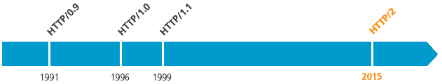
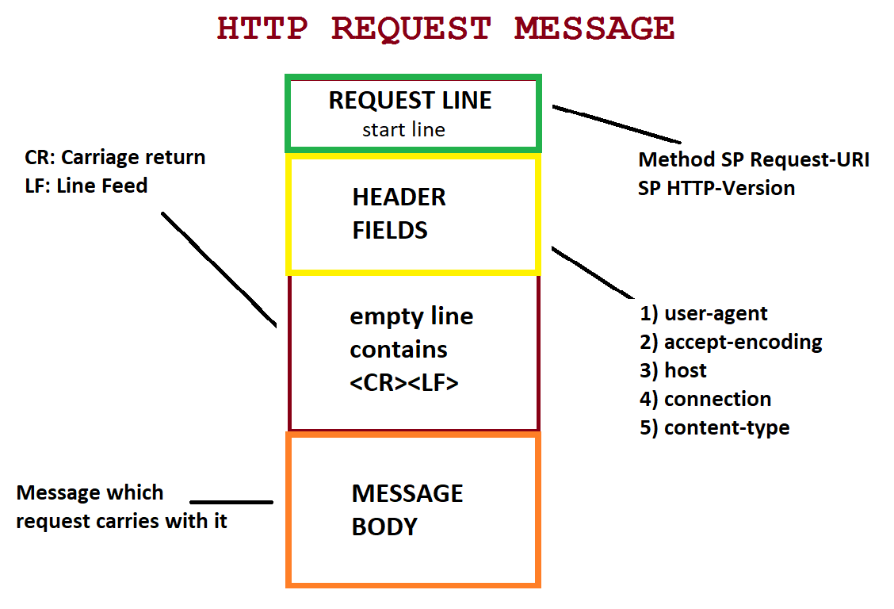
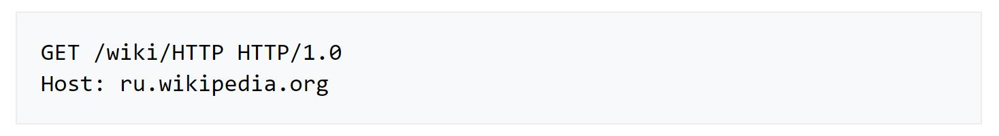
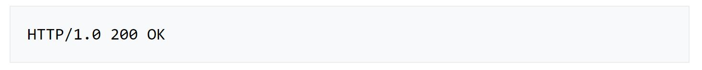
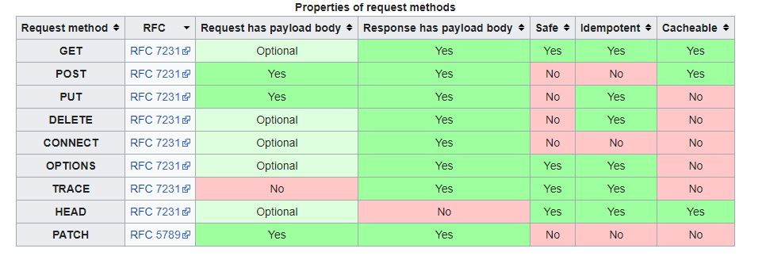

HTTP
HTTP (Hypertext Transfer Protocol) is an application-layer protocol for transmitting hypermedia documents, such as HTML.
OSI Model

History HTTP

- HTTP/0.9
- HTTP/1.0
- HTTP/1.1
- HTTP/2.0
- HTTP/3
HTTP session
In client-server protocols, like HTTP, sessions consist of three phases:
- The client establishes a TCP connection (or the appropriate connection if the transport layer is not TCP).
- The client sends its request, and waits for the answer.
- The server processes the request, sending2 back its answer, providing a status code and appropriate data.
HTTP message structure
Starting line
Request

Response

Request methods
HTTP status codes